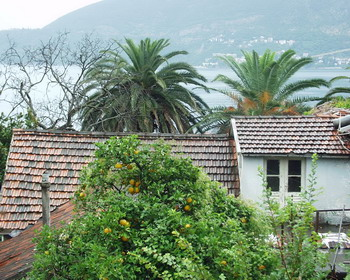

Kreativna ekonomija na Balkanu?
Jedna od prvih, ali i dalje prihvaćenih definicija 'kreativne ekonomije' (ili industrije) jeste da je to ona industrija koja ima poreklo u individualnoj originalnosti, veštini i talentu i koja može da stvori bogatstvo ili kreira radna mesta kroz razvoj i eksploataciju intelektualne svojine. Prema zvaničnim britanskim klasifikacijama, u ovu oblast spadaju sledeći sektori: advertising, arhitektura, umetnost i tržište antikviteta, zanati, dizajn, visoka moda, film i video, kompjuterske igrice i drugi interaktivni softver za dokolicu, muzika, scenske umetnosti, izdavaštvo, televizija i radio.
Za značajan razvoj kreativne ekonomije potreban je odgovarajući socijalni kontekst. Pojedini kolumnisti i teoretičari tako tvrde da ta nova kultura predsavlja mešavinu buržoaskih i boemskih vrednosti, ili da članovi 'kreativne klase' bez napora integrišu svoje brojne interese i osobine u jedan kreativni identitet. Sociološki gledano, kreativna ekonomija kompatibilna je sa takozvanim post-industrijskim društvom, odnosno sa 'drugom', 'refleksivnom' ili 'likvidnom' modernošću. Ta vrsta društvenih odnosa i najnovija vrsta modernosti, prisutna danas u najrazvijenim zapadnim društvima, transformiše sve one odnose koji su ostali nepromenjeni tokom prethodnih faza razvoja: porodični i polni odnosi, odnosi na radnom mestu, individualni razvoj i osećaj pripadnosti.
U tom procesu centralni je proces individualizacije, van konteksta tradicionalnih kolektivnih društvenih mehanizama.Ceo taj društveni kontekst drugačiji je u jugoistočnoj Evropi (pišu autori u tekstu 'Creative Industries in Transition: Towards a Creative Economy?), pa otuda negativno utiče na razvoj kreativne ekonomije. Cela priča je duža, ali okosnica je da iako su neki elementi 'druge' modernosti prisutni i u društvima na Balkanu, barem u pojedinim segmentima, na primer individualizacija, neki drugi faktori, kao što je razvoj 'post-materijalističkih' vrednosti, uglavnom su nepostojeći. Dok je u najrazvijenijim društvima životni standard dovoljno porastao da materijalna dobra više ne predstavljaju dominantno merilo statusa, to u društvima na Balkanu nije slučaj. Ratovi na prostoru bivše Jugoslavije i teškoće tranzicione ekonomije unazadile su neke od društvenih trendova koji su se već bili razvili krajem 80ih.
Dvoje autora pišu da su istraživanja iz tog perioda pokazala da su se društvene vrednosti tada mladih ljudi iz Slovenije, Hrvatske, Vojvodine, Beograda razvijale paralelno sa onima zapadnim zemljama:
"In a wider context, the existence of post-materialist values among the youth in the late socialist Yugoslavia can be attributed to a larger degree of openess to the West and higher living standards that it enjoyed in comparison with the socialist states of the Soviet bloc."
Ono što se dešavalo tokom 90ih, dobrim delom je anuliralo tu vrstu prednosti.
Tranzicioni razvoj, koji je u mnogim sferama bio šematski, takođe je negativno uticao na mogućnosti razvoja kreativne ekonomije pošto je transformacija u privredama oovih zemalja uglavnom bila (i jeste) usmerena na to da proizvode za razvijenija tržišta u Evropskoj uniji.
Druga dva faktora koja negativno utiču na mogućnost razvoja u sferi kreativne ekonomije su 'odliv mozgova', odnosno iseljavanje obrazovanih, i nepoštovanje autorskih prava, to jest široko rasprostranjena piraterija.
Ja se pitam: Da li je to sve? Ili ipak postoje neke druge zanimljive opcije i mogućnosti?
Komentari
 kiko | 12.03.07 08:39
kiko | 12.03.07 08:39
Odlicna tema! Razmisljam od sinoc o tvom pitanju i nekako mi najvise padaju na pamet sledeca tri razloga: zdrava (kapitalisticka) konkurencija i pri tom odsustvo bilo kakvog monopola, visok zivotni standard i na kraju sposobnost kreativnog razmisljanja i razvijanja ideja (cini mi se da nase obrazovanje i dalje forsira bubanje a ne razmisljanje i ucenje o tome kako se uci).
Mislim da je USA i dalje na vrhu po svemu tome a o tome mozes da procitas i u ovom postu: http://www.brianoberkirch.com/?p=864
Inspirala si me da napisem nesto na temu kreativnih projekata u Svajcarskoj iako Svajcarci nedostatak kreativnost nadoknadjuju predanim radom. :)
 Maja | 13.03.07 14:41
Maja | 13.03.07 14:41
 RSS feed
RSS feed
 sadržaji se objavljuju pod
sadržaji se objavljuju pod
Komentari
htela bih da pisem rad ne temu kreativne ekonomije i njene afirmacije kao privredne grane u nasoj zemlji.U kojoj instituciji bih najkvalitetnije mogla da se bavim istrazivackim radom na tu temu?
tijana | 06.11.07 20:15
Stvarno ne znam. Ali ako saznas, javi:)
la lara | 06.11.07 20:33
Trenutno ne postoji nijedan institucija/agencija koja se bavi istrazivanjem kreativnih industrija. Najbolje je da istrazivacki rad zapocnes kao samostalni istrazivac. Mozda nisam dobro razumela tvoje pitanje,pa bi bilo dobro da malo pojasnis kontekst svog pitanja...Koliko sam ja razumela tebe interesuju ekonomski aspekti kreativne ekonomije? Evo u nastavku nekoliko informacija o literaturi i istrazivanjima na tu temu u svetu i kod nas, mozda ce ti biti od koristi...
Koncept kreativne ekonomije je u literaturu uveo Howkins, pa ti preporucujem, pre nego se upustis u istrazivanje da pogledas njegovu knjigu Kreativna ekonomija - kako ljudi zaradjuju na idejama(Binoza press, Zagreb, 2003. godina). Ono sto je za njega kreativna ekonomija (videces spisak kreativnih delatnosti koje on tretira pod konceptom kreativna ekonomija), neke zemlje smatraju kreativnim industrijama. Tako na primer, danas se u literaturi mogu uociti cetiri koncepta kreativnih industrija: britanski, francuski, nordijski i americki.Svaki od njih poseduje odredjene specificnosti, a njihova ekonomska analiza zasnovana je na razlicitim istrazivacko-metodloskim postupcima. O brinaskom konceptu najvise mozes saznati kroz njihove Creative industries mapping documents (Department for Culture, Media and Sport, London), za americki koncept pogledaj WIPO sekciju o industrijama autorskih prava (postoje uporedne studije iz 2003. godine, a u oktobru je bila i velika konferencija u Zenevi o kreativnim industrijama). O nordijskom konceptu mozes naci u radovima Gi Debora i Gerhar Sulca, danas je taj koncept poznat kao ekonomija iskustva (pogledaj: Pine J, Gilmore J. (1999), The Experience Economy, Harvard Business School Press, Boston; Denmark in the culture and experience economy-5 new steps (2003), The Danish growth strategy, Danish Ministry of Culture, Copenhagen)
Francuski koncept je poznat pod nazivom industrija kulture (pogledaj: Teodor A, Horkheimer M. (1989) Dijalektika prosvetiteljstva, „Veselin Masleša“ & „Svjetlost“, Sarajevo)
Do sada je najintegralniju studiju o ekonomskom doprinosu kreativnih industrija ekonomskom razvoju napravio Centar za istrazivanja kulturne politike Hong Konga (pogledaj: Baseline study on Hong Kong’s creative industries (2003), Center for Cultural Policy Research, The University of Hong Kong, Hong Kong).
U nasoj zemlji, pogledaj istrazivanje Kreativne industrije: preporuke za razvoj kreativnih industrija (S. Jovicic, H.Mikic, Britanski savet, Beograd, 2006); Creative-led development in Serbia, Zbornik radova sa konferencije Savremeni izazovi ekonomske teorije i prakse, Ekonomski fakultet, Beograd, oktobar 2007. godine); Preduzetnistvo u kulturi, Milena Dragicevic Sesic, Zbronik radova FDU, 1993; Sesic-Dragicevic, B. Stojiljkovic Kultura, menadzment, animacija, CLIO 2003; Dz. Hartli Kreativne industrije, zbornik radova, CLIO, 2007.).
Nadam se da ce ti ove informacije biti od koristi...
Kikica | 07.01.08 01:21
Hvala!
la lara | 07.01.08 09:39